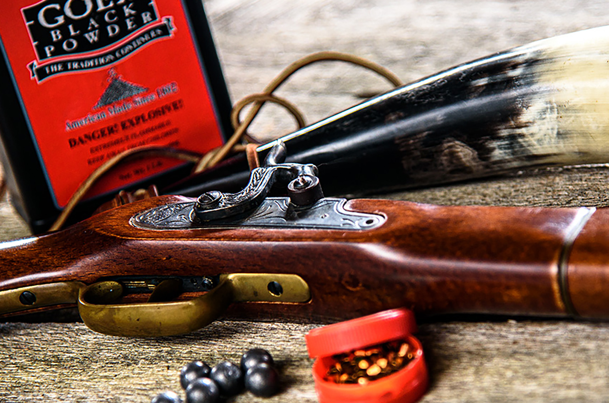

Black Powder Rendezvous
What does Blackpowder mean literally?
Gunpowder, also commonly known as black powder to distinguish it from modern smokeless powder, is the
earliest known chemical explosive. It consists of a mixture of sulfur, carbon and potassium nitrate.
The sulfur and carbon act as fuels while the saltpeter is an oxidizer.

What does rendezvous mean literally?
Borrowed from French rendez-vous (“appointment”), noun derived from second person plural
imperative of se rendre (“to go to”), literally, “[you (imperative)] go to, get yourself to [a place]”.
 Getting in the propper practice you could do this to. By scrolling down and clicking on the button Tomahawk
you will be on your way to throwing like a Mountain Man.
Getting in the propper practice you could do this to. By scrolling down and clicking on the button Tomahawk
you will be on your way to throwing like a Mountain Man.